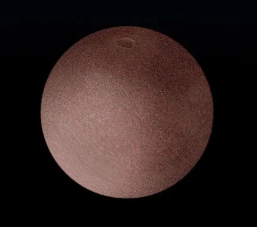

Planet Kerdil Terang Sabuk Kuiper
Makemake adalah planet kerdil terbesar kedua di kawasan Sabuk Kuiper setelah Pluto. Ditemukan pada tahun 2005 dan dinamai berdasarkan dewa pencipta dalam mitologi Rapa Nui (Pulau Paskah), Makemake merupakan salah satu objek paling terang di Sabuk Kuiper karena permukaannya yang sangat reflektif (albedo tinggi). Permukaannya diselimuti oleh lapisan es metana, etana, dan nitrogen yang beku. Ketika mendekati perihelion (jarak terdekat dengan Matahari), es metana ini menguap membentuk atmosfer tipis sementara. Pada tahun 2015, Teleskop Luar Angkasa Hubble menemukan satelit alami pertamanya yang sangat gelap, dijuluki S/2015 (136472) 1 atau MK2.